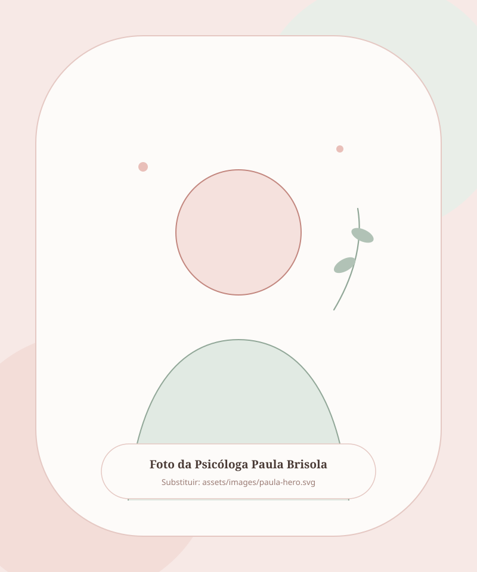
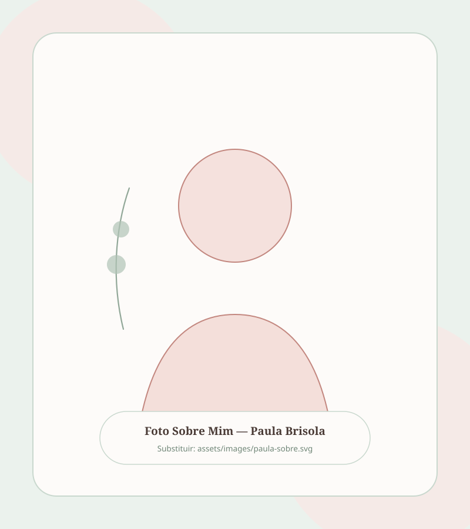
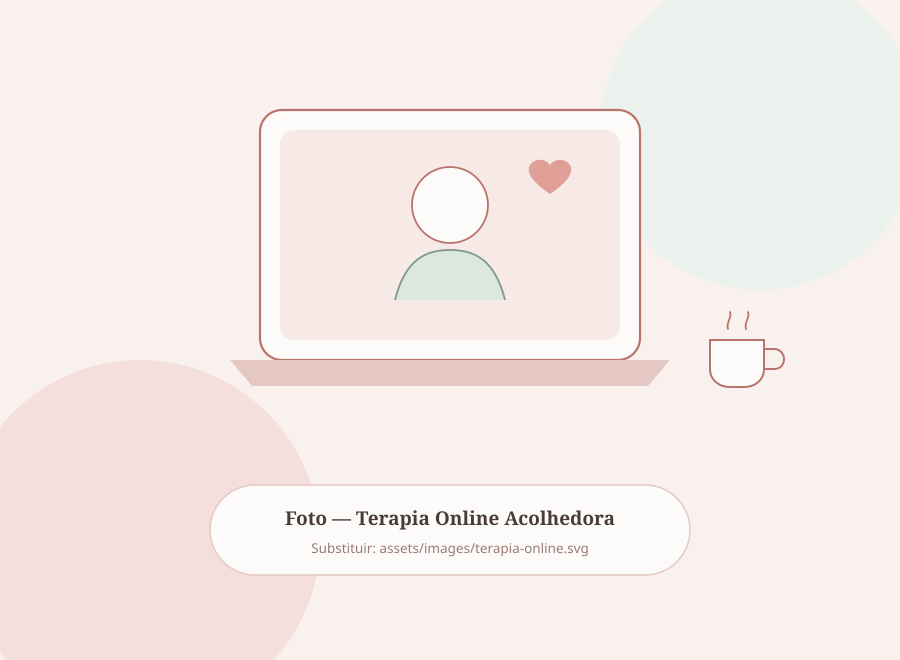

Um espaço seguro para você se acolher, cuidar das suas emoções e viver com mais leveza.
Olá, seja bem-vinda(o)! Eu sou a Paula Brisola, psicóloga clínica. Te acompanho em um processo terapêutico afetuoso, ético e estruturado para aliviar a ansiedade, fortalecer sua autoestima e construir relações mais saudáveis.

A terapia pode te ajudar se você tem sentido...
Você não precisa dar conta de tudo sozinha(o). Veja se algum desses sentimentos faz parte do seu momento atual:
Mente acelerada e ansiedade
Preocupação constante com o amanhã, sensação de aperto no peito e dificuldade de descansar de verdade.
Excesso de autocobrança
Sensação de que nunca faz o suficiente, perfeccionismo cansativo e culpa sempre que tenta olhar para si.
Dificuldade em dizer “não”
Medo de desagradar os outros, colocando as necessidades de todo mundo na frente das suas.
Se identificou com algum desses pontos?
Dar o primeiro passo pode parecer difícil, mas estou aqui para te receber com calma e carinho.

Prazer, eu sou a Paula Brisola
Sou psicóloga clínica apaixonada por escutar histórias e auxiliar pessoas a construírem uma relação mais gentil, consciente e saudável consigo mesmas.
Meu trabalho é fundamentado na Terapia Cognitivo-Comportamental (TCC), mas acima de qualquer técnica, acredito em uma clínica humana, afetuosa e sem julgamentos — um lugar onde você possa tirar a armadura de “dar conta de tudo” e simplesmente ser ouvida(o).
Nas nossas sessões, caminharemos lado a lado para compreender suas emoções, ressignificar padrões que trazem dor e fortalecer sua autonomia.
Como posso te acompanhar
Conheça as principais áreas trabalhadas nas sessões de psicoterapia individual:
Ansiedade e Estresse
Acolhimento para crises de angústia, pensamentos acelerados e sobrecarga mental, desenvolvendo ferramentas práticas de regulação emocional para o seu dia a dia.
Autoestima e Autoconhecimento
Um espaço para diminuir a autocrítica severa, resgatar sua autoconfiança, reconhecer seu próprio valor e fazer escolhas mais alinhadas com quem você é.
Relacionamentos e Limites
Compreensão de padrões afetivos repetitivos, dependência emocional, comunicação assertiva e fortalecimento de vínculos amorosos, familiares e sociais.
Esgotamento e Fases de Transição
Suporte emocional em fases de cansaço intenso (Burnout), mudanças de carreira, maternidade, términos, perdas e construção de novos ciclos.
Terapia Online: acolhimento de onde você estiver
A modalidade online foi pensada para oferecer praticidade à sua rotina sem abrir mão do calor humano, da escuta atenta e do sigilo profissional.
Prepare seu chá ou café, escolha um cantinho tranquilo com fones de ouvido e tenha o seu momento semanal de cuidado emocional por videochamada.

Como será o nosso espaço?
Iniciar a terapia é um gesto de carinho com você mesma(o). Veja como funciona:
Primeiro Contato
Você me chama no WhatsApp (15) 99743-0186, tira suas dúvidas e escolhemos juntas o melhor horário para sua rotina.
Sessão de Acolhimento
No nosso primeiro encontro de 50 minutos, você compartilha sua história no seu tempo, em um ambiente leve e seguro.
Sua Jornada
Seguimos com encontros semanais personalizados para fortalecer sua saúde emocional e conquistar mais leveza.
Me acompanhe também no Instagram
Conteúdos diários sobre autocuidado, saúde emocional, autoestima e psicologia com leveza.
Perguntas comuns sobre a terapia
Qual é a duração e a frequência das sessões? +
A terapia online funciona tão bem quanto a presencial? +
Você atende por convênio ou emite recibo para reembolso? +
Qual o valor da sessão? +
Tudo o que eu conversar na sessão é sigiloso? +
Dê o primeiro passo pelo seu bem-estar emocional
Estou aqui para te acompanhar nessa jornada. Me chame no WhatsApp para tirar dúvidas ou agendar seu horário.
Agende sua Sessão
Clique no botão abaixo para falar diretamente comigo pelo WhatsApp. Será um prazer te acolher!
Chamar no WhatsApp (15) 99743-0186Nota: Este site não realiza atendimento de emergência 24h. Em caso de crise aguda, ligue gratuitamente para o CVV (188).